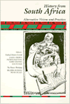
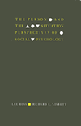

| 
|
The
60s Experience
Hard Lessons About Modern America
Morgan, Edward P., and Howard P. Zinn A compelling democratic
vision that grounded Sixties movements and traces its evolution
through concrete experiences
357 pp • 6x9 • Spring 1991
cloth 0-87722-805-1
EAN 978-0-87722-805-9
|
|
|
Against
Instinct
From Biology to Philosophical Psychology
Senchuk, Dennis M. A skeptical critique of the rampant nativism
of the behavioral and cognitive sciences
200 pp • Spring 1991
cloth 0-87722-815-9
EAN 978-0-87722-815-8
|
| 
|
Ain't
Gonna Let Nobody Turn Me Round
The Pursuit of Racial Justice in the Rural South
Couto, Richard A. An examination of individuals who enacted
change in the status, opportunities, and treatment of African Americans
in the rural South
440 pp • 6x9 • Spring 1991
cloth 0-87722-806-X
EAN 978-0-87722-806-6
|
| 
|
Art
and Engagement
Berleant, Arnold A new aesthetic theory based on aesthetic
perception and participation with the arts
288 pp • Spring 1991
cloth 0-87722-797-7
EAN 978-0-87722-797-7
|
|
|
Bass
Line
The Stories and Photographs of Milt Hinton
Hinton, Milt, and David C. Berger Experience the jazz world
from the lens of Hinton's camera
New in Paperback!
328 pp • 10.5x9.5 • Fall 1988
paper 0-87722-681-4
EAN 978-0-87722-681-9
|
|
|
Black
Women Writing Autobiography
A Tradition Within a Tradition
Braxton, Joanne M. Argues for a corrective to both black
and feminist literary criticism
New in Paperback!
240 pp • Fall 1989
paper 0-87722-803-5
EAN 978-0-87722-803-5
|
|
|
Building
the Beloved Community
Maurice McCrackin's Life for Peace and Civil Rights
Bechtel, Judith A., Robert M. Coughlin, and Daniel Berrigan
One man's story interweaves with many of the crucial social issues
of the past fifty years
288 pp • Spring 1991
cloth 0-87722-783-7
EAN 978-0-87722-783-0
|
|
|
Camus
A Critical Examination
Sprintzen, David A comprehensive analysis in English of
the thought of Albert Camus from a philosophical perspective
New in Paperback!
336 pp • 6x9 • Fall 1988
paper 0-87722-827-2
EAN 978-0-87722-827-1
|
| 
|
Cane
Fires
The Anti-Japanese Movement in Hawaii, 1865-1945
Okihiro, Gary Y. A history of a systematic anti-Japanese
movement in Hawaii from the time migrant workers were brought to
the sugar cane fields until the end of World War II
360 pp • Spring 1991
paper 0-87722-945-7
EAN 978-0-87722-945-2
cloth 0-87722-799-3
EAN 978-0-87722-799-1
|
| 
|
The
Case Against Christianity
Martin, Michael A rational critique of Christianity
288 pp • 5.5x8.25 • Spring 1991
paper 1-56639-081-8
EAN 978-1-56639-081-1
cloth 0-87722-767-5
EAN 978-0-87722-767-0
|
|
|
Christian
Pacifism
Dombrowski, Daniel A. A concentrated defense of pacifism
arguing that war is philosophically irreconcilable with Christianity
240 pp • Spring 1991
cloth 0-87722-802-7
EAN 978-0-87722-802-8
|
|
|
The
Cult of the Court
Brigham, John A fresh and innovative examination of the
U.S. Supreme Court as the final arbiter of constitutional interpretation
New in Paperback!
280 pp • Fall 1987
paper 0-87722-828-0
EAN 978-0-87722-828-8
|
| 
|
Dangerous
Passage
The Social Control of Sexuality in Women's Adolescence
Nathanson, Constance A. Adolescent pregnancy as a public
policy issue
304 pp • Spring 1991
paper 1-56639-077-X
EAN 978-1-56639-077-4
cloth 0-87722-824-8
EAN 978-0-87722-824-0
|
|
|
Dilemmas
of the American Self
Hewitt, John P. A theory about what it means to be an individual
within contemporary American society
New in Paperback!
304 pp • Fall 1989
paper 0-87722-837-X
EAN 978-0-87722-837-0
|
|
|
Doing
Comparable Worth
Gender, Class, and Pay Equity
Acker, Joan The study of a large comparable worth project
and of how gender and class dynamics influenced its outcome
New in Paperback!
272 pp • 6x9 • Fall 1989
paper 0-87722-834-5
EAN 978-0-87722-834-9
|
|
|
Entry
Denied
Exclusion and the Chinese Community in America, 1882-1943
Chan, Sucheng Legal history illuminating Chinese Americans'
struggle for civil rights
320 pp • Spring 1991
cloth 0-87722-798-5
EAN 978-0-87722-798-4
|
|
|
Expected
Miracles
Surgeons at Work
Cassell, Joan The world of surgeons from their own perspective
259 pp • Spring 1991
paper 0-87722-838-8
EAN 978-0-87722-838-7
cloth 0-87722-804-3
EAN 978-0-87722-804-2
|
|
|
The
Fashioned Self
Finkelstein, Joanne A lively analysis of personal fashio
giving particular attention to aspects of gender identity
212 pp • Spring 1991
cloth 0-87722-850-7
EAN 978-0-87722-850-9
|
| 
|
Heidegger
and Nazism
Farías, Victor, Joseph Margolis, and Tom Rockmore The first
English edition of a controversial work documents Heidegger's intimate
involvement with Nazism
New in Paperback!
368 pp • Fall 1989
paper 0-87722-830-2
EAN 978-0-87722-830-1
|
|
|
History
and the New Left
Madison, Wisconsin, 1950-1970
Buhle, Paul, ed. Essays trace the rise of an intellectual
New Left from 1950 to 1970
New in Paperback!
457 pp • Fall 1989
paper 0-87722-836-1
EAN 978-0-87722-836-3
|
| 
|
History
from South Africa
Alternative Visions and Practices
Brown, Joshua, Patrick Manning, Karin Shapiro, and Jon Wiener, eds.
Articles from a special issue of the Radical History Review
that map the development of interpretations of the South African
past and depart radically from the official history
467 pp • Spring 1991
paper 0-87722-849-3
EAN 978-0-87722-849-3
cloth 0-87722-848-5
EAN 978-0-87722-848-6
|
|
|
Human
Universals
Brown, Donald E. Challenging the assumption that human behavior
is primarily determined by culture, Brown hypothesizes about universal
traits
220 pp • Spring 1991
cloth 0-87722-841-8
EAN 978-0-87722-841-7
|
|
|
In
the Shadow of War
Memories of a Soldier and Therapist
Student, Menachem, and Terry A. Kupers Evocative accounts
of talks between the author and his patients, as well as his own
memories
192 pp • Spring 1991
cloth 0-87722-789-6
EAN 978-0-87722-789-2
|
| 
|
Managing
Contracted Services in the Nonprofit Agency
Administrative, Ethical, and Political Issues
Bernstein, Susan R., and Roger A. Lohmann Interviews with
nonprofit agency managers illuminate how welfare state mechanisms
work in practice and in the tangled nature of bureaucracies
230 pp • 6x9 • Spring 1991
paper 0-87722-809-4
EAN 978-0-87722-809-7
cloth 0-87722-808-6
EAN 978-0-87722-808-0
|
|
The
Metaphysics of Self and World
Toward a Humanistic Philosophy
Adams, E. M. A full-fledged humanistic solution to the modern
human identity crisis occasioned by the way we must think in living
our lives and the way we have become accustomed to think in our
search for knowledge and understanding of the world
325 pp • 6x9 • Spring 1991
cloth 0-87722-808-6
EAN 978-0-87722-808-0
|
|
|
Muchachas
No More
Household Workers in Latin America and the Caribbean
Chaney, Elsa M., and Mary Garcia Castro, eds. An in-depth
look at the sizeable population of women who are domestic workers
in Latin America and the Caribbean
New in Paperback!
520 pp • Fall 1988
paper 0-87722-835-3
EAN 978-0-87722-835-6
|
|
|
The
Nights of Labor
The Workers' Dream in Nineteenth-Century France
Rancière, Jacques, John Drury, and Donald Reid First English
translation dramatically reinterprets the Revolution of 1830
New in Paperback!
448 pp • Fall 1989
paper 0-87722-833-7
EAN 978-0-87722-833-2
|
|
|
On
Strike at Hormel
The Struggle for a Democratic Labor Movement
Green, Hardy, and David Moberg An insider's account of this
watershed strike
New in Paperback!
369 pp • Fall 1989
paper 0-87722-832-9
EAN 978-0-87722-832-5
|
|
|
On
the Man Question
Gender and Civic Virtue in America
Kann, Mark E. Male individualism conditioned with a strong
dose of civic virtue
352 pp • Spring 1991
cloth 0-87722-807-8
EAN 978-0-87722-807-3
|
| 
|
The
Person and the Situation
Essential Contributions of Social Psychology
Ross, Lee, and Richard E. Nisbett A groundbreaking synthesis
of the central themes of social psychology and personality theory
1992 pp • Spring 1991
cloth 0-87722-851-5
EAN 978-0-87722-851-6
|
|
|
The
Philosophy of Alain Locke
Harlem Renaissance and Beyond
Harris, Leonard, ed. Important writings on cultural pluralism,
value relativism, and critical relativism
New in Paperback!
344 pp • Fall 1988
paper 0-87722-829-9
EAN 978-0-87722-829-5
|
| 
|
The
Politics of Street Crime
Criminal Process and Cultural Obsession
Scheingold, Stuart A. America's contradictory attitudes
toward crime: repellent danger versus media glamorization
250 pp • Spring 1991
cloth 0-87722-825-6
EAN 978-0-87722-825-7
|
|
|
Professions
and the State
Expertise and Autonomy in the Soviet Union and Eastern Europe
Jones, Anthony, ed. The first survey of the major professions
in the USSR
256 pp • Spring 1991
cloth 0-87722-801-9
EAN 978-0-87722-801-1
|
|
|
Psychology
of Attitude Change and Social Influence
Zimbardo, Philip G., and Michael R. Leippe Theory about
the psychology of attitudes, persuasion, and social influence
400 pp • Spring 1991
cloth 0-87722-852-3
EAN 978-0-87722-852-3
|
| 
|
Race,
Gender, and Desire
Narrative Strategies in the Fiction of Toni Cade Bambara, Toni
Morrison, and Alice Walker
Butler-Evans, Elliott Explores the manner in which the politics
of race and gender overdetermine narrative structures
New in Paperback!
232 pp • Spring 1989
paper 0-87722-831-0
EAN 978-0-87722-831-8
|
| 
|
The
Right to Privacy
Gays, Lesbians, and the Constitution
Samar, Vincent J. Discusses the reasons why and the degree
to which privacy should be protected
260 pp • Spring 1991
cloth 0-87722-796-9
EAN 978-0-87722-796-0
|
|
|
Samuel
Joseph May and the Dilemmas of the Liberal Persuasion, 1797-1871
Yacovone, Donald Samuel Joseph May rejected his upbringing
to become a central figure in the antislavery and antebellum reform
movements
300 pp • Spring 1991
cloth 0-87722-760-8
EAN 978-0-87722-760-1
|
| 
|
Shades
of Black
Diversity in African American Identity
Cross, Jr., William E. Presents the diversity that has always
been the hallmark of Black psychology, exploding the myth that self-hatred
is the dominant theme in Black identity
296 pp • Spring 1991
cloth 0-87722-759-4
EAN 978-0-87722-759-5
|
|
|
States,
Labor Markets, and the Future of Old-Age Policy
Myles, John, and Jill Quadagno, eds. Original essays examine
how various countries have responded to population aging and increases
in national expenditures for the elderly
340 pp • Spring 1991
cloth 0-87722-790-X
EAN 978-0-87722-790-8
|
|
|
Taxes
and State Power
Political Instability in Bolivia, 1900-1950
Gallo, Carmenza The impact of the Bolivian tax code and
its relationship to class structure
200 pp • Spring 1991
cloth 0-87722-800-0
EAN 978-0-87722-800-4
|
|
|
The
Thee Generation
Reflections on the Coming Revolution
Regan, Tom Arguing that the expansive ethic of service is
replacing the suffocating ethic of greed
New in Paperback!
176 pp • Fall 1990
paper 0-87722-772-1
EAN 978-0-87722-772-4
|
|
|
Understanding
Breast Cancer
Kelly, Patricia T. A guide to breast cancer risk analysis
that is accessible to both health care providers and patients
195 pp • Spring 1991
paper 0-87722-813-2
EAN 978-0-87722-813-4
cloth 0-87722-812-4
EAN 978-0-87722-812-7
|
| 
|
Who
Cares for the Elderly?
Public Policy and the Experiences of Adult Daughters
Abel, Emily K. The eploration of family care for disabled
elderly people
248 pp • 6x9 • Spring 1991
cloth 0-87722-814-0
EAN 978-0-87722-814-1
|
|
|
Women
in the Sanctuary Movement
Lorentzen, Robin Twenty-nine in-depth interviews with women
involved in local sanctuary sites
240 pp • Spring 1991
cloth 0-87722-768-3
EAN 978-0-87722-768-7
|
|
|
Working
Time in Transition
The Political Economy of Working Hours in Industrial Nations
Hinrichs, Karl, William Roche, and Carmen Sirianni, eds. How
technological and market changes affect labor
352 pp • Spring 1991
cloth 0-87722-757-8
EAN 978-0-87722-757-1
|